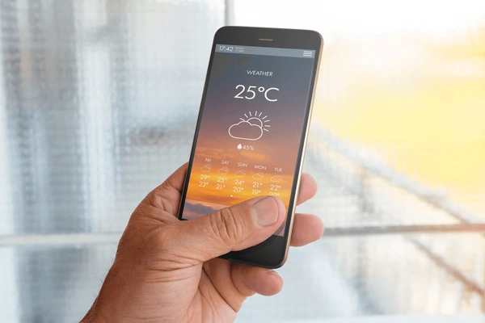
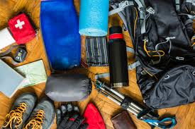
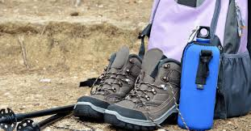
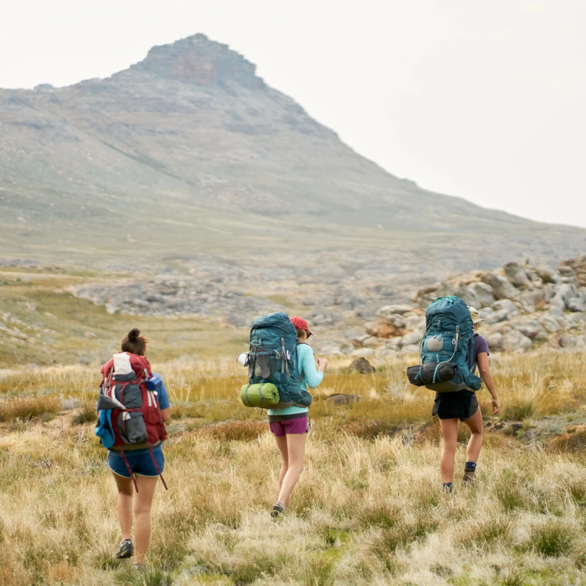
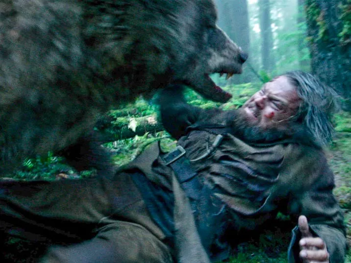
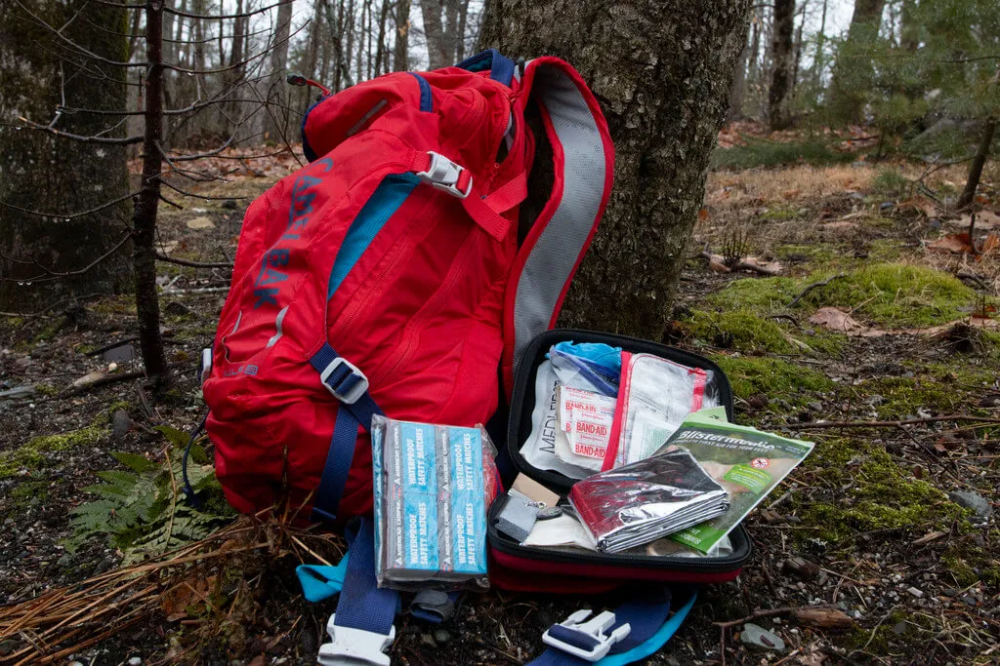
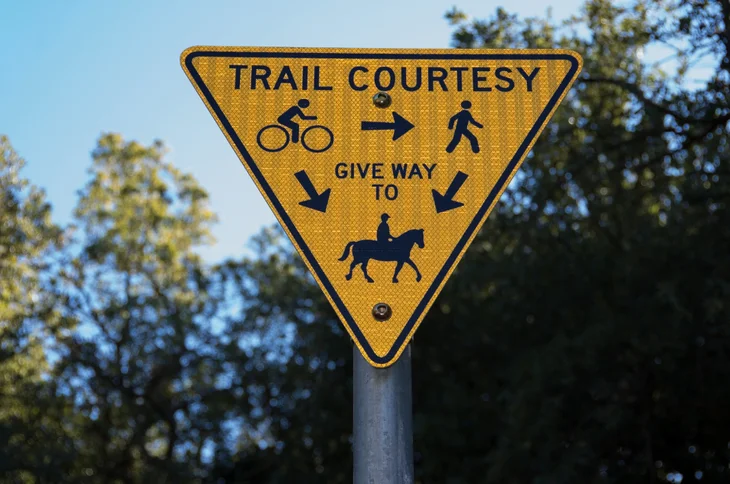

Important Hiking Tips
1. Plan your route:

Before heading out, research the trail you plan to hike. Know the distance, terrain, elevation gain, and any potential hazards. Make sure it matches your skill level and fitness.
2. Check the weather:
Weather conditions can change rapidly in the wilderness. Always check the forecast before your hike and be prepared for unexpected changes.
3. Pack the essentials:
Carry the Ten Essentials: navigation tools, sun protection, insulation, illumination, first-aid supplies, fire starter, repair kit and tools, nutrition, hydration, and emergency shelter.
4. Wear appropriate clothing and footwear:
Dress in layers and wear moisture-wicking clothing to stay dry and comfortable. Invest in sturdy hiking boots or shoes with good traction to prevent slips and falls.
5. Stay hydrated and nourished:

Bring plenty of water and high-energy snacks to keep your energy levels up during the hike. Drink water regularly, even if you're not feeling thirsty, to avoid dehydration.
6. Leave no trace:

Respect nature and leave the trail as you found it. Pack out all trash, avoid damaging vegetation, and stay on designated trails to minimize your impact on the environment.
7. Hike with a buddy:
It's safer to hike with a companion, especially on remote trails. If you're hiking alone, let someone know your itinerary and expected return time.
8. Be aware of wildlife:
Research the wildlife in the area and know how to react if you encounter animals. Keep a safe distance and never approach or feed wild animals.
9. Take breaks and pace yourself:
Listen to your body and take breaks as needed. Pace yourself to avoid exhaustion and enjoy the scenery along the way.
10. Know basic first aid:
Learn basic first aid skills and carry a first aid kit. Know how to treat common hiking injuries like blisters, sprains, and insect bites.
11. Follow trail etiquette:
Yield to uphill hikers, stay to the right to allow others to pass, and be courteous to fellow hikers. Respect trail rules and regulations.
12. Be prepared for emergencies:
Carry a fully charged cell phone (if there's reception), a whistle, and a multi-tool. Know how to signal for help in case of an emergency.